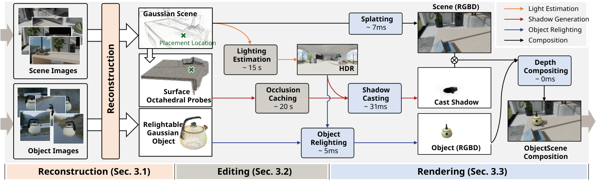

Abstract
Gaussian Splatting (GS) enables immersive rendering, but realistic 3D object–scene composition remains challenging. Baked appearance and shadow information in GS radiance fields cause inconsistencies when combining objects and scenes. Addressing this requires relightable object reconstruction and scene lighting estimation. For relightable object reconstruction, existing Gaussian-based inverse rendering methods often rely on ray tracing, leading to low efficiency. We introduce Surface Octahedral Probes (SOPs), which store lighting and occlusion information and allow efficient 3D querying via interpolation, avoiding expensive ray tracing. SOPs provide at least a 2x speedup in reconstruction and enable real-time shadow computation in Gaussian scenes. For lighting estimation, existing Gaussian-based inverse rendering methods struggle to model intricate light transport and often fail in complex scenes, while learning-based methods predict lighting from a single image and are viewpoint-sensitive. We observe that 3D object–scene composition primarily concerns the object’s appearance and nearby shadows. Thus, we simplify the challenging task of full scene lighting estimation by focusing on the environment lighting at the object’s placement. Specifically, we capture a 360° reconstructed radiance field of the scene at the location and fine-tune a diffusion model to complete the lighting. Building on these advances, we propose ComGS, a novel 3D object–scene composition framework. Our method achieves high-quality, real-time rendering at around 28 FPS, produces visually harmonious results with vivid shadows, and requires only 36 seconds for editing.
Method Overview

Realistic 3D Object-Scene Composition Pipeline
Our approach comprises three main stages, creating a seamless workflow for realistic object-scene composition:
Reconstruction
From multi-view image collections, we reconstruct both the Gaussian scene and relightable Gaussian object. We achieve at least 2x faster object reconstruction with SOPs.
Editing
We perform lighting estimation from the reconstructed scene radiance field, and use Surface Octahedral Probes (SOPs) to perform occlusion caching for fast shadow calculation.
Rendering
We perform Gaussian splatting, object relighting, shadow casting, and depth compositing, resulting in visually harmonious composition with realistic shadowing effects.
Inverse Rendering with Surface Octahedral Probes (SOPs).

We utilize trained relightable 2D Gaussians to generate GBuffers via splatting, followed by deferred physically based rendering for a render image. Illumination is split into direct lighting from environment map, indirect lighting and occlusion captured by textures in SOPs. Both the environment map and textures are stored as octahedral maps. Low-discrepancy ray sampling is used to compute illumination at shading point, with indirect light and occlusion derived via kNN interpolation from nearby probes. SOPs are initialized with ray tracing and optimized under its guidance, avoiding intensive ray tracing per optimization iteration and boosting inverse rendering efficiency.
Method Comparison on SynCom Dataset
Comprehensive comparison of all methods including DiffHarmony, ZeroComp, GS-IR, IRGS, DiffusionLight, and our variants
Composition Performance on SynCom Dataset
- PSNR/SSIM: Against ground truth
- 3D Consistency (Con.) & Harmony (Harm.): From user study
- FPS: Rendering Speed
- T(Edit): Editing Time (s)
| Method | PSNR ↑ | SSIM ↑ | Con. ↑ | Harm. ↑ | FPS ↑ | T(Edit) ↓ |
|---|---|---|---|---|---|---|
| DiffHarmony | 22.436 | 0.825 | 2.106 | 1.641 | 0.01 | - |
| ZeroComp | 20.344 | 0.780 | 1.932 | 1.603 | 0.40 | - |
| GS-IR | 22.418 | 0.824 | 2.339 | 1.608 | 2.11 | - |
| IRGS | 22.417 | 0.799 | 2.967 | 2.419 | 0.03 | - |
| DiffusionLight | 21.842 | 0.841 | 1.464 | 1.817 | 0.02 | - |
| Ours (Trace) | 24.597 | 0.848 | 4.197 | 4.111 | 3.48 | 14.59 |
| Ours (SOPs) | 24.456 | 0.847 | 4.151 | 4.052 | 28.45 | 36.12 |